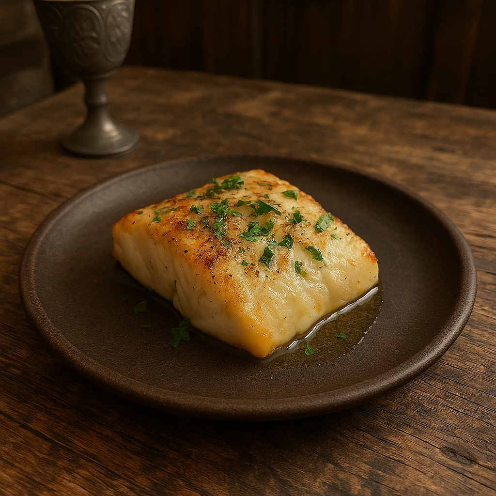

Codfishx

Description
A simple and flavorful codfish dish made with flaky white fish, sautéed vegetables, and olive oil. Light, healthy, and perfect for a quick dinner.
Ingredients
- 2 codfish fillets (fresh or soaked if salted)
- 2 tablespoons olive oil
- 1 small onion
- 2 garlic gloves
- 1 bell pepper
- 1 tomato
- Fresh parsley
- Salt and pepper for taste
- Lemon wedges
Steps
- Pat the codfish dry and season with salt and pepper.
- In a pan, heat olive oil over medium heat.
- Sauté onion and garlic until soft and fragrant.
- Add bell pepper and tomato, cooking for 5–6 minutes.
- Move veggies to the side and add the codfish to the pan.
- Cook fish for 3–4 minutes per side until flaky and opaque.
- Spoon veggies over the fish and cook together for 2 more minutes.
- Garnish with parsley and serve with lemon wedges.
Back to all recipes